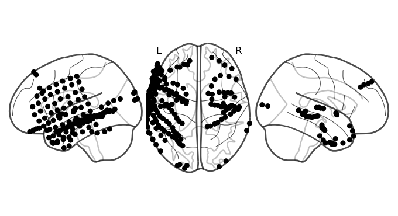

Introduction¶
here, we show you how to load and plot ECoG data.
[1]:
import mne
import numpy as np
import pandas as pd
import matplotlib.pyplot as plt
from nilearn.plotting import plot_markers
from mne_bids import BIDSPath
[2]:
edf_path = BIDSPath(root="../monkey/derivatives/ecogprep", datatype="ieeg", extension=".fif")
edf_paths = edf_path.match()
# hacky way just to get highgamma since `desc` doesn't work
edf_paths = [path for path in edf_paths if 'highgamma' in str(path)]
len(edf_paths)
[2]:
8
[3]:
raw = mne.io.read_raw_fif(edf_paths[1])
raw
Opening raw data file ../monkey/derivatives/ecogprep/sub-02/ieeg/sub-02_task-monkey_desc-highgamma_ieeg.fif...
Range : 0 ... 921599 = 0.000 ... 1799.998 secs
Ready.
[3]:
General
| Measurement date | March 11, 2019 10:54:21 GMT |
|---|---|
| Experimenter | Unknown |
| Participant | sub-02 |
Channels
| Digitized points | 189 points |
|---|---|
| Good channels | 186 ECoG |
| Bad channels | None |
| EOG channels | Not available |
| ECG channels | Not available |
Data
| Sampling frequency | 512.00 Hz |
|---|---|
| Highpass | 70.00 Hz |
| Lowpass | 200.00 Hz |
| Filenames | sub-02_task-monkey_desc-highgamma_ieeg.fif |
| Duration | 00:29:60 (HH:MM:SS) |
[4]:
from mne.viz import (
plot_alignment,
set_3d_view,
snapshot_brain_montage,
)
[ ]:
fig = plot_alignment(
raw.info,
trans=trans,
subject="sample_ecog",
subjects_dir=subjects_dir,
surfaces=dict(pial=0.9),
)
set_3d_view(figure=fig, azimuth=20, elevation=80)
xy, im = snapshot_brain_montage(fig, montage)
# Convert from a dictionary to array to plot
xy_pts = np.vstack([xy[ch] for ch in raw.ch_names])
# Compute beta power to visualize
raw.load_data()
beta_power = raw.filter(20, 30).apply_hilbert(envelope=True).get_data()
beta_power = beta_power.max(axis=1) # take maximum over time
# This allows us to use matplotlib to create arbitrary 2d scatterplots
fig2, ax = plt.subplots(figsize=(10, 10))
ax.imshow(im)
cmap = ax.scatter(*xy_pts.T, c=beta_power, s=100, cmap="coolwarm")
cbar = fig2.colorbar(cmap)
cbar.ax.set_ylabel("Beta Power")
ax.set_axis_off()
# fig2.savefig('./brain.png', bbox_inches='tight') # For ClickableImage
[5]:
ch2loc = {ch['ch_name']: ch['loc'][:3] for ch in raw.info['chs']}
coords = np.vstack([ch2loc[ch] for ch in raw.info['ch_names']])
coords *= 1000 # nilearn likes to plot in meters, not mm
coords.shape
[5]:
(186, 3)
[36]:
values = np.ones(len(coords))
plot_markers(values, coords,
node_size=30, display_mode='lzr', alpha=1,
node_cmap='Grays', colorbar=False, node_vmin=0, node_vmax=1)
plt.show()
